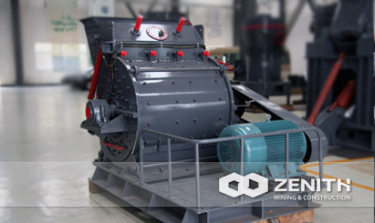

- 
Hammer Mill
The hammer mill, also called coarse powder mill, is one kind of new high efficient grinding machine. This mill is mainly used for coarse powder and small size of sand production. The output size can reach more than 90% of 0-3mm. What is more, the price and cost of coarse powder mill is also attractive for mining investors.
Application of Hammer Mill
The hammer mill is widely used in metallurgy, mining, chemical, cement, construction, industrial and mining industries etc. As for processing materials, Zenith's hammer mill is widely used for dealing with the cement, construction, sand, refractory material, ceramic and other industrial and mining enterprises, engaged in breaking and crushing the material in the operation. It is mainly suitable for crushing various soft and hard ore. whose compression strength is not higher than 320MPa.
In addition, the feeding size of Zenith's PEW jaw crushers is significantly by our experts. Meanwhile, its wide range of application includes crushing hard rock, basalt, and river pebbles, etc. According to our customers both at home and abroad, this series of Zenith's products are in high accordance with the price and cost of jaw crusher.
Working Principle of Hammer Mill
Zenith's hammer mill consists mainly of the frame, rotor, hammers , grizzly bars and other components. The frame includes upper part and lower parts, which are welded by steel plates after cutting, the remaining parts bolted into one. High manganese steel liners are studded with inside the frame, to facilitate replacement for a new liners after worn; on the main shaft are installed several groups of the spindle distribution of the hammers, which consists of rotor with the axle of hammers and rotary table.
The host drives the main shaft through the motor and V-belt driven spindle to rotate the rotor, generating the centrifugal force, then driving all hammers stretch around. The bulks of material feed into the crushing chamber, will be crushed by the hammers at a high-speed movement. The broken material requested will be passed the grizzly bars at the lower part and discharged, the unbroken rest will be left in the chamber to be crushed repeatedly by the hammers and iron plates until it can reach the requested standard. To avoid clogging, the water content of the material to be crushed not more than 5%.
Hammer Mill Benefits and advantages
- High production capacity, high ratio of price and performance
- Low power consumption, and uniform particle size.
- Simple structure, easy to operate.
- Low investment cost, easy management.
The tacnology data
| Name & Model | HM4008-75 | HM4012-90 | HM4015-132 | |
|---|---|---|---|---|
| Rotor diameter(mm) | 750 | 900 | 1150 | |
| Rotor length(mm) | 800 | 1200 | 1500 | |
| Rotor speed(rm) | 800-1000 | 800-1000 | 550-800 | |
| Feeding size（mm） | 320×930 | 400×1200 | 500×1500 | |
| Max feed size(mm) | <30 | <40 | <50 | |
| Discharge size(mm) | 0-3 | 0-3 | 0-8 | |
| Theory processing capacity(th) | 8-15 | 15-40 | 40-70 | |
| Motor | Model（Standard） | Y280S-4 | Y280M-4 | Y315L2-6 |
| Power(kw) | 75 | 90 | 132 | |
| Rotate speed(rm) | ||||
| Hammer number（pcs） | 18 | 32 | 32 | |
| Dimension(L×W×Hmm) | 2130×1665×1610 | 2840×2100×2020 | 3720×2650×2540 | |